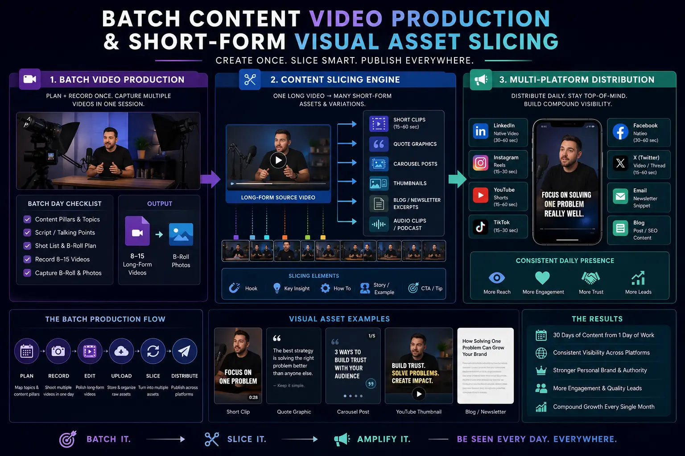
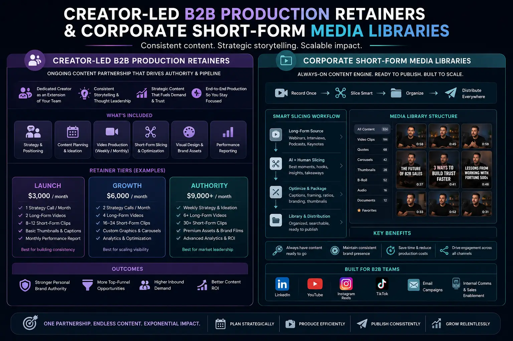

Utilizing Batch Content Systems to Secure a 30-Day Omnipresent Visibility Feed
The Omnipresence Challenge: The Operational Reality of Executive Branding
In the contemporary B2B ecosystem, establishing a dominant digital presence is no longer a luxury reserved for venture-backed consumer brands. For enterprise executives, startup founders, and professional service providers, building an authoritative personal brand is the single most effective channel for driving inbound pipeline, closing high-value sales, and attracting premium strategic partnerships. However, the reality of running a business poses a fundamental structural challenge: organic algorithms on platforms like LinkedIn, Instagram, and YouTube demand constant, high-quality, and daily publishing, while the operational realities of corporate leadership leave almost no room for content creation.
When executives attempt to create content on an ad-hoc basis—filming a quick video on a smartphone when they have a spare fifteen minutes between meetings—they face multiple inefficiencies. The creative energy and logistical effort required to set up equipment, check lighting, test audio, configure backdrops, and get into the right mindset for a single video is incredibly high. If a client meeting runs late, a product issue arises, or a board presentation needs revision, the daily content schedule is immediately broken. This irregular posting schedule prevents the brand from building algorithmic momentum. To escape this cycle, forward-thinking brands are moving away from daily filming and adopting a systematic approach: Batch Content Video Production.
By separating content recording from daily publishing, brands can build a predictable, scalable content engine. Instead of recording content daily or weekly, the team uses structured Batch Content Video Production systems to shoot several weeks' worth of video assets in a single, focused session. These raw video assets are then processed using Short-Form Visual Asset Slicing to create multiple high-impact posts. By partnering with a professional social media content creation agency to manage these systems under Creator-Led B2B Production Retainers, executives can build extensive corporate short-form media libraries that keep their social channels active with high-quality posts. This system is the most efficient way of scaling personal brand reach without adding operational burden.
Pre-Production Strategy: The Pre-requisite for High-Yield Media Sessions
A successful batch recording session is won or lost in the pre-production phase. Without a rigorous, detailed blueprint, a batch shoot can quickly become disorganized, leading to delays, crew downtime, and substandard performance from the talent. The foundation of this preparation phase is organizing structured calendar media planning shoots that map out your content goals weeks in advance.
Pre-production begins by identifying the core themes that align with the brand's business goals. Instead of speaking randomly, we structure the monthly content calendar into specific pillars—such as industry commentary, educational tips, case studies, and personal storytelling. This categorization ensures that the final content library remains diverse and engaging for the target audience.
Once the pillars are established, the team writes detailed scripts and storyboards. For short-form social video, the first 3 seconds are critical to prevent users from scrolling past. We write conversational scripts that begin with a strong, scroll-stopping hook designed to grab attention. The body of the script is structured using bullet points rather than dense paragraphs, allowing the speaker to deliver insights naturally without sounding rehearsed.
To make your batch content look like it was recorded over multiple days, we plan visual variety into the shoot. We coordinate outfit changes and identify subtle background adjustments or camera angle shifts for different segments. This preparation is essential for maximizing camera team hours and ensuring the production crew captures a diverse, high-quality media library.
During the pre-production stage, we also map out the technical specifications for each piece of content. This includes specifying whether a topic should be shot in a wide 16:9 format for YouTube and website embedding, a 1:1 square format for LinkedIn feed posts, or a vertical 9:16 format for Reels and Shorts. Knowing these parameters beforehand allows the crew to configure the cameras and monitors to frame the speaker perfectly, minimizing post-production cropping issues.
Posting Consistency
Establish a regular posting schedule that keeps your brand top-of-mind without daily recording distractions.
Time Efficiency
Consolidate content creation into a single session, freeing up your calendar to focus on core operations.
Production Quality
Ensure professional lighting, audio, and visual pacing that match the standards of top-performing social creators.
Scalable Reach
Transform raw footage into multiple optimized clips, expanding your audience across LinkedIn, YouTube, and Instagram.

Executing the Production Session: Maximizing camera team hours
The production session itself is structured as a high-efficiency media sprint. By preparing all scripts, storyboards, and wardrobe choices in advance, the shoot day focuses entirely on capture and performance. A typical session lasts between four and six hours, during which the crew records all content for a 30-day calendar.
The day begins with setup and technical checks. Before the speaker enters the studio, the crew configures all camera positions, test-lights the set, and verifies audio levels. We often set up two cameras—a main vertical camera for vertical video and a secondary wider camera to capture B-roll and alternate angles—giving the editing team more options in post-production.
Once recording starts, we keep the speaker in a steady flow. Using a teleprompter or bulleted notes, the talent records each segment in quick succession. We schedule brief wardrobe changes every 4 to 5 videos and execute subtle camera rotations to maintain visual variety. By keeping the talent focused on delivery and eliminating technical delays, the team succeeds in maximizing camera team hours and capturing a wealth of raw material that is ready for slicing.
During the final hour of the shoot, we capture supporting B-roll footage. This includes close-ups of the speaker gesturing, interacting with a laptop, or walking through the office. These secondary clips are invaluable for editing, allowing the team to add overlays, transitions, and context to the final videos.
Managing a highly structured production timeline requires coordination between the director, the camera crew, and the talent. We divide the shoot into specific recording blocks, separating long-form presentations from short-form visual snippets. This division allows the speaker to adjust their pacing and energy levels depending on the format. By having the production crew manage the technical aspects of the shoot, the executive can focus entirely on delivering their message with authority.
The Slicing Workflow: Building corporate short-form media libraries
The post-production phase is where raw footage is turned into a structured content library. Through systematic Short-Form Visual Asset Slicing, a single recorded segment—such as a 5-minute explanation of a framework—is dissected into multiple short-form vertical snippets optimized for social media platforms.
Editors review the raw takes to identify high-impact moments, key insights, and strong quotes. Each selected snippet is cut, paced with jump cuts to remove gaps, and formatted for vertical 9:16 aspect ratios. The editor then adds platform-native elements, such as animated captions, graphic overlays, and sound design, to enhance engagement.
The final assets are organized into corporate short-form media libraries, where they are stored by topic and platform. This organized library allows marketing teams to retrieve and schedule content easily, ensuring that the brand's feeds remain active with professional, high-quality posts.
Developing a robust slicing workflow involves several key editing steps. First, we apply color correction and audio mastering to ensure the videos look and sound professional across all devices. Next, we generate highly accurate captions, highlighting key phrases and keywords to capture the interest of sound-off viewers. Finally, we design customized thumbnails and preview graphics that align with the brand's visual identity.
By maintaining an organized database of your assets, your marketing team can easily repurpose content for future campaigns. For example, a video snippet that performed well on LinkedIn can be re-edited into an Instagram Reel or used as a video element in an email newsletter. This process maximizes the return on your initial production investment, turning a single shoot day into a long-term marketing asset.
Pre-Production
- Identify key questions and stories that stop the scroll on professional feeds.
- Format scripts with brief, clear talking points for natural on-camera delivery.
- Plan wardrobe changes and background variations to simulate different days.
Production Sprint
- Use pre-set lighting zones and camera angles to minimize setup delays.
- Keep the speaker in a steady flow using teleprompters and cues.
- Capture supporting B-roll clips to use as overlays and transitions.
Post-Production Slicing
- Slice long recordings into vertical snippets optimized for social channels.
- Apply jump cuts, dynamic text overlays, and captions to hold viewer interest.
- Organize final assets into structured digital media libraries.

The Managed Solution: Creator-Led B2B Production Retainers
For busy founders and executives, managing a batch content system internally can be challenging. It requires coordinating camera crews, editors, scriptwriters, and platform managers. To solve this, many businesses partner with a professional social media content creation agency that offers Creator-Led B2B Production Retainers.
These retainers provide an end-to-end managed service that handles the entire content production lifecycle. The agency coordinates pre-production, manages High-volume content media days, executes Short-Form Visual Asset Slicing, and manages the resulting corporate short-form media libraries. This managed approach requires a minimal time investment from the executive—typically just a few hours a month for filming—while delivering a consistent stream of professional, influencer-style corporate videos that build trust and authority. By leveraging these retainers, brands can scale their reach and build a strong presence online without adding operational burden.
In addition to content production, a dedicated agency assists with distribution strategy, caption writing, and engagement tactics. They analyze performance metrics to refine future scripts and hooks, ensuring that every subsequent shoot day is more targeted and effective. This continuous feedback loop helps in scaling personal brand reach and ensures that your content continues to generate business results.
Working with an experienced agency also gives you access to professional studio spaces, advanced camera gear, and skilled editors who understand the changing trends of social media algorithms. The agency ensures that your videos are formatted with the latest visual styles, kinetic typography, and transitions that keep viewers engaged. This creator-led approach helps B2B brands speak to their audience in a human, authentic way while maintaining corporate credibility.
Ultimately, a production retainer turns content creation from a chaotic monthly chore into a predictable, automated business process. You no longer have to worry about what to post next week or spend hours editing video clips. The system handles everything for you, allowing you to build an active, authoritative personal brand while focusing on your core business goals.
Conclusion: Structuring Your Compounding Authority Engine
Utilizing batch content systems is the most effective way to secure a 30-day omnipresent visibility feed. By moving away from ad-hoc content creation and implementing a systematic workflow, brands can build consistency, maximize budgets, and maintain high standards of quality.
Whether you are an executive looking to share your expertise, a startup founder building brand awareness, or an enterprise seeking to establish industry authority, a batch content system provides the infrastructure you need to succeed. Through monthly Batch Content Video Production sessions, structured calendar media planning shoots, and disciplined Short-Form Visual Asset Slicing, you can maintain a daily multi-platform publishing presence that builds lasting authority.
Consistent publishing has a compounding effect on your personal brand. As you share valuable insights day after day, you build a library of helpful resources that prospects, partners, and peers reference. Over time, this content library establishes you as a primary voice in your industry, driving trust and generating business opportunities.
At The PhD Ads, we specialize in helping founders, executives, and brands scale their digital presence. From organizing calendar media planning shoots and managing High-volume content media days to executing Short-Form Visual Asset Slicing and delivering corporate short-form media libraries, we provide a complete, managed content engine. Let us help you maximize your next shoot while maximizing camera team hours and delivering professional, influencer-style corporate video assets.
Key Topics
Ready to Build a Batch Content System and Secure Omnipresent Visibility?
At The PhD Ads in Madurai, we specialize in helping founders, executives, and brands scale their digital presence. From organizing calendar media planning shoots and managing High-volume content media days to executing Short-Form Visual Asset Slicing and delivering corporate short-form media libraries, we provide a complete, managed content engine.
Our Creator-Led B2B Production Retainers are designed to handle every stage of your content lifecycle, ensuring you achieve scaling personal brand reach with minimal time investment. Let us help you maximize your next shoot while maximizing camera team hours and delivering professional, influencer-style corporate video assets.
Email: team@e2o.in